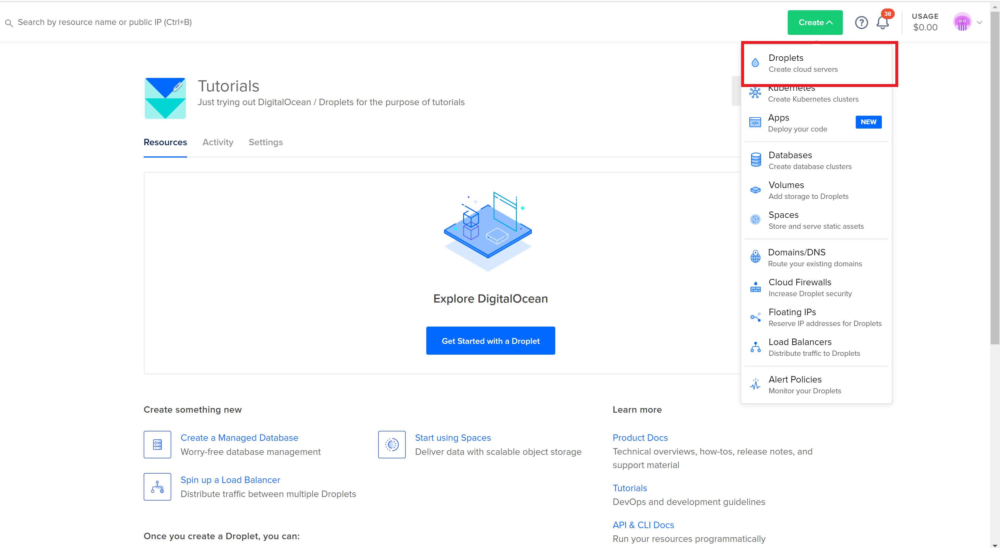
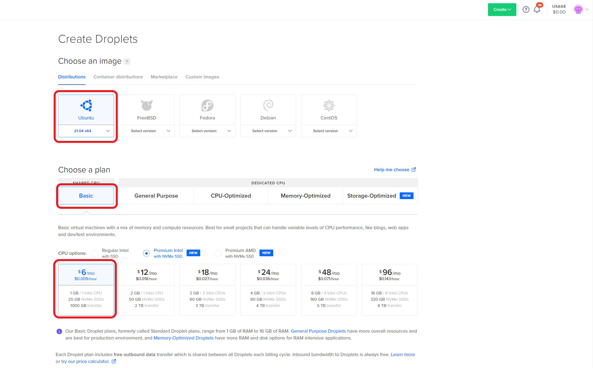
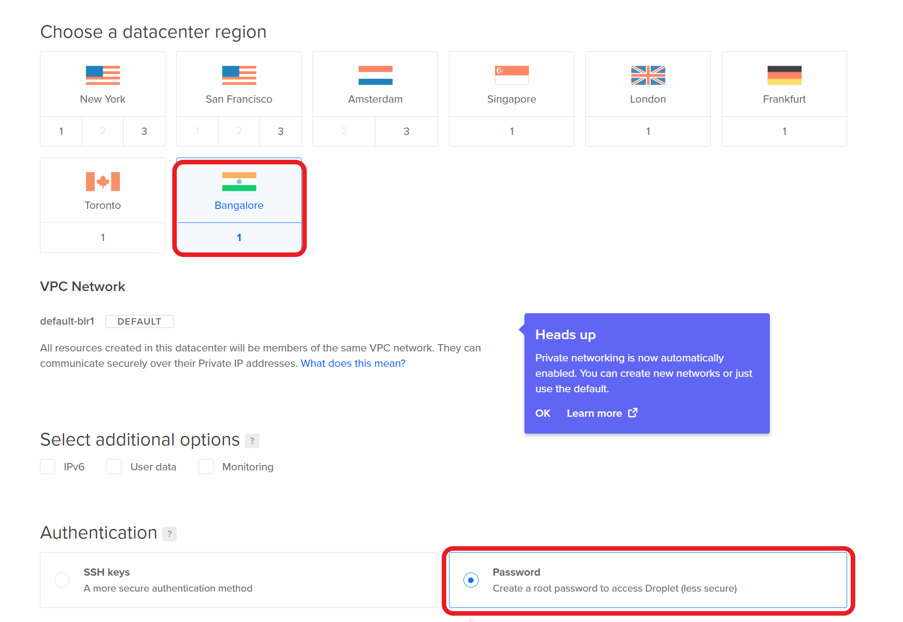
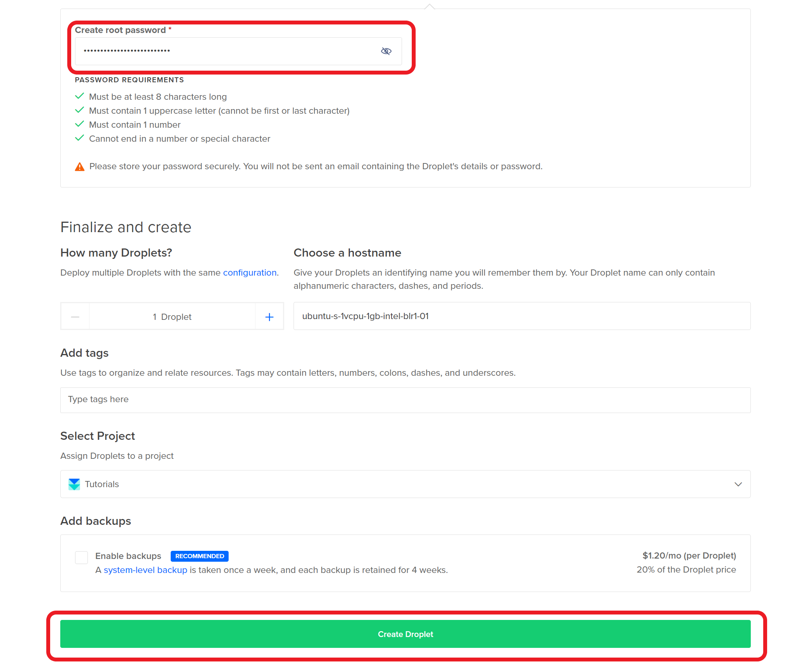
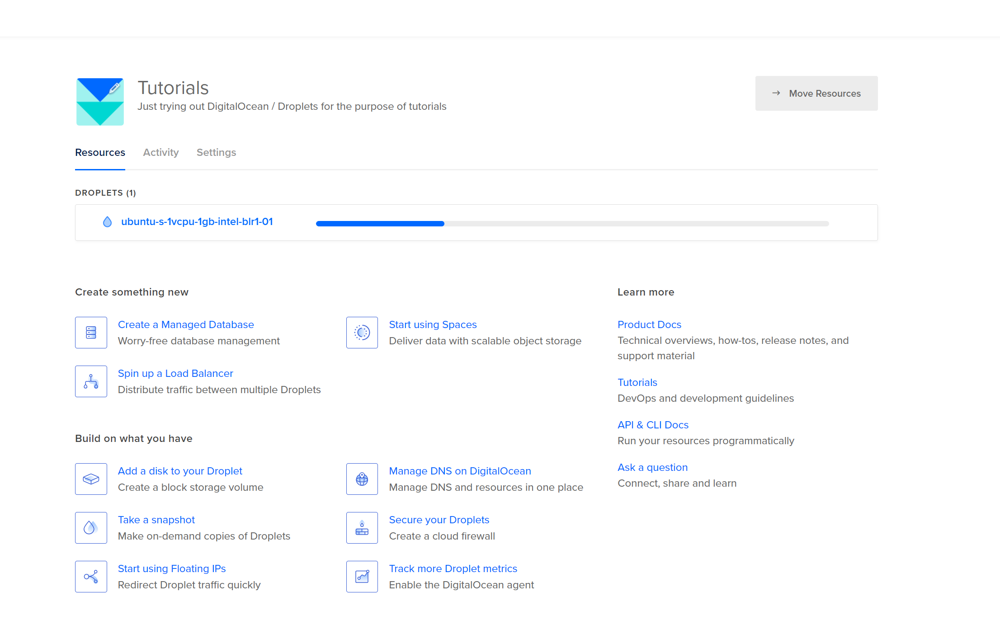
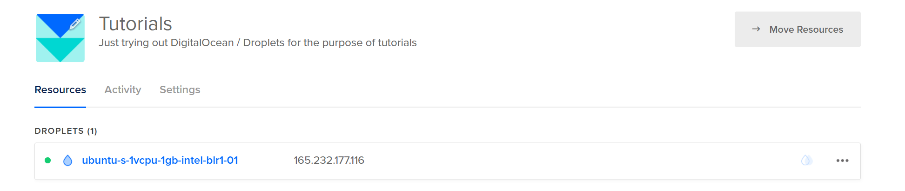
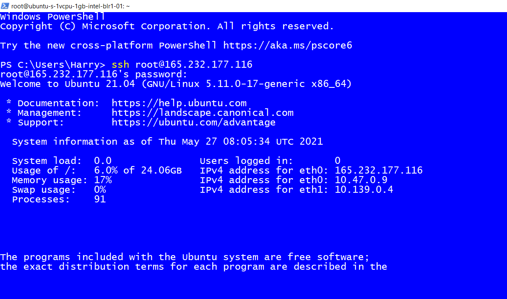
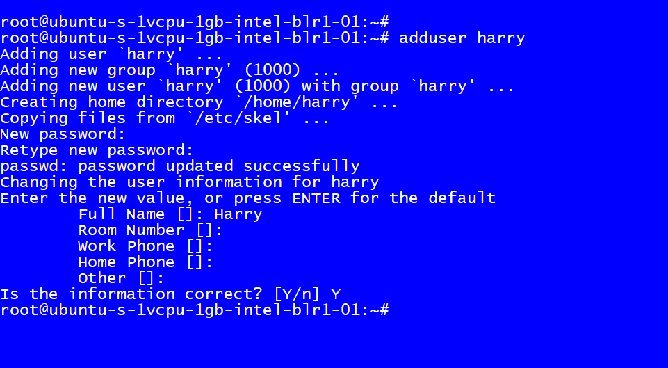
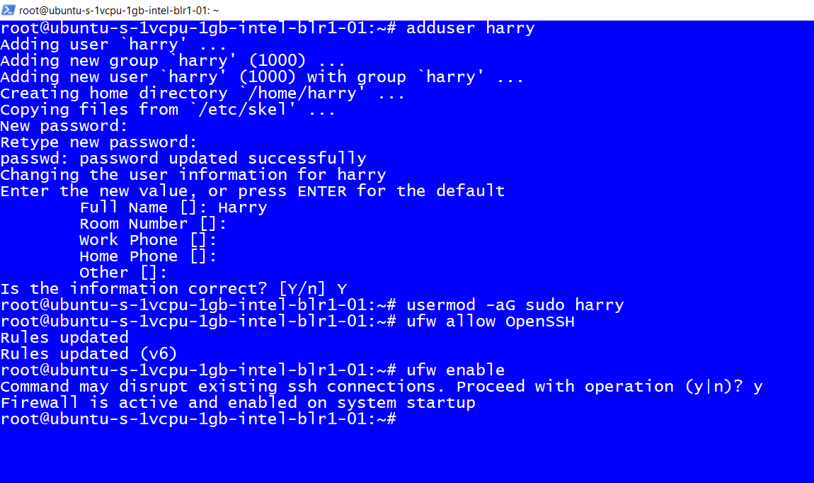
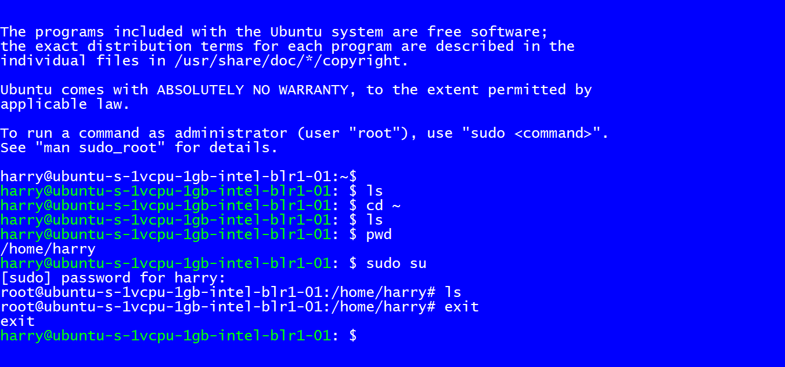

When you first create a server from any provider like Linode, DigitalOcean, etc., you will have to secure it by executing several commands. This post will explain what those commands are and why you need to run all those commands to start using your server securely.
I will break down the procedure we will perform into 5 simple steps:
Let's get started
For creating a VPS, I will choose DigitalOcean. I have been DigitalOcean for quite a while now, and it never disappointed me. There are other service providers like Linode, Vultr, etc.
Once you create an account on DigitalOcean and log in, DigitalOcean will present you with this screen. Click on create and then on droplets:
DigitalOcean will present you with the following screen, where you can choose the droplet, Operating system, and plan size. I will choose the options as marked in red below:
Choose a region. Ideally, this has to be the region closest to your users. This is the physical location where the server will be located:
Finally, choose a password and click create droplet:
You will see processing like this
and finally, we will get a public IP address
We will use this public IP address to login into our server
The very first step to start using a server is to log in to it. A web server is just like a computer on the web. We cannot connect a physical keyboard and mouse to it. So how do we use it? We will use an SSH Client to get access to the server's terminal (this remote computer), and once we have access to the terminal, we can start executing commands on this server.
To log in to our server, we need to know its public IP address, just like you need to know the address of a place before visiting it.
Execute the following command on the PowerShell or terminal
ssh root@your_server_ip
I will type this:
ssh root@165.232.177.116
Enter the password provided by your service provider. We have created a password in DigitalOcean, which we will enter here. Once you enter the password when prompted, you will be logged in as root.
The root user is a user having the highest privileges on the server. This means that a root user can do anything and everything on the server. This is why it is strongly discouraged to use a root account as it might accidentally delete files/uninstall programs/install programs etc. Hence we will create a user who will have restricted permissions on the server for day-to-day use.
We will now create a non-root user account that will have restricted access to the machine. This is ideal if you want to have people working for you on the server without doing everything on the server.
Execute the following command:
adduser harry
You will be asked to enter some information and a password. Choose a strong password to avoid getting hacked!
We have successfully created an account with basic access. We want this user to be able to elevate to root access when required. This will be useful when you want to use your server and sometimes do something which requires root access.
This will save you the time to log out and log back in as the root user.
Execute the following command on the server:
usermod -aG sudo harry
Our server is public, and we want to protect it from external unwanted connections. We want only selected services exposed to the public on our server.
We will set up the UFW firewall on our Ubuntu 20.04 server and allow OpenSSH, which allows us to connect to our server.
Execute the following command to allow OpenSSH:
ufw allow OpenSSH
Enable the firewall by executing the following command:
ufw enable
The firewall will now block all the connections except SSH
You have successfully created a new user. Try to log in through this user in a new terminal tab and verify everything works before logging out from the current session.
You can type the following command to elevate to the root access as and when required.
sudo su
To go back to the existing user, execute the following command:
exit
I hope this guide was helpful. Happy Coding!